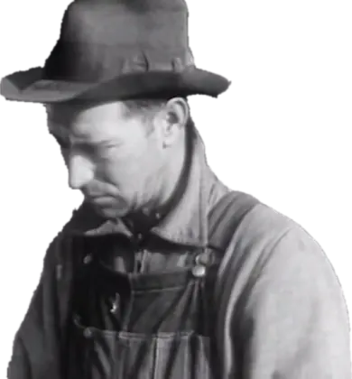
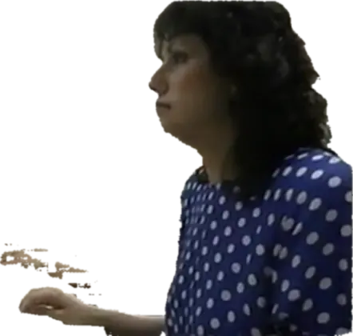

THE REPUBLIC · EPISODE SEVENTEEN · 2077 LONE STAR · ALL EPISODES
SHADOWS ON THE SERVER WALL
A narrator tells the story. The characters are figures cut from archival films, each first shown where the archive found it, then lifted onto one stage to speak the screenplay's lines. The archive speaks as the Republic's citizens, in their own pictures and voices.
THE CAST, AS FOUND

WALKERas found in Children Must Learn, The · 1940
SUSANas found in Inside the Fed · 1994THE SCORE · D-A-E · HONED FOR FILM, CHOSEN BY WHAT EACH MOVEMENT SAYS AND SHOULD FEEL
Chicha Surf & Boreal Glitch Workshop · dreamy ambient, lonely desert
Preparation & Drift · dreamy ambient, glitchy electronic
Cedar and Cassette · ocean and waves, something breaking apart
Slide Carousel at Blue Hour · dreamy ambient, dub reggae
Cedar Tank Splash · triumph, dub reggae
Snowbound Umeå Cabin · quiet calm, dreamy ambient